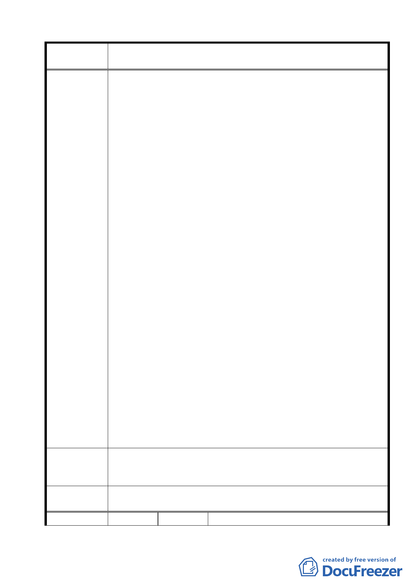

案名
建議辦法
委員會議
決議
編號
變更臺北市士林區陽明山山仔后地區第二種住宅區為特定住宅區
細部計畫案
畢後，更顯本次都市計畫變更案只是徒勞之舉。
2.特住一及特住二看起來好像較住二的開發限制嚴格，但實則不
然。以開發實務角度來看，特住一及特住二的編定，倘若將來
土地私有化被單一建商整併整體開發，在建蔽率不一定用完的
情況下，若又有頂樓退縮及機房不計入容積或都市更新容積獎
勵（政府因建商幫助都市更新等事項，免費送給建商的容積），
蓋到 10 層樓並不是太困難的任務。
3.萬一將來美軍宿舍不幸全部私有化後，依本計畫擬定之特住一
及特住二所增加環境承載分析和解決方案闕如。例如供水部分
（計畫書 2-6 頁）現有自來水供應以 3400 人計（實際含文大師
生超過 20000 人）早已經不足，尖峰時間需停水或輪流供水，
而為了本區的開發，還另闢自來水工程改善計畫，實際可改善
情況為何卻未見載明。交通服務水準的分析亦同，當地 F 級的
交通狀況，再增加 1477pcu/hr 不是雪上加霜嗎，竟未見任何交
通改善計畫，而且，這些數字的分析基礎，皆未計算將來開發
後居住人口引入的服務人口之乘數效應，如此，環境承載的問
題將是倍數增加。
4.本次都市計畫變更，若自限於美軍宿舍的使用分區管制組別改
變，無意檢討當地其他公設的使用現況進而調整都市體質，提
升公共設施服務水平，而只針對美軍宿舍群所在地開發量的調
降，何需大費周章圈設 1 塊 73.63 公頃的計畫範圍。
5.從 2000 年開始，對於公有土地被房地產利益炒作背後的所損害
的公共利益及社會正義，臺北市市民等了數年，我們失去了無
數的城市中心精華土地變成高牆豪宅，原本以為山仔后地區的
都市計畫變更案將是一個指標性的案例，有機會打造一個生
態、永續、健康的城市發展環境，但是從本次都市計畫變更計
畫書的內容來看，不僅對於未來可能出現的開發模式未能未雨
綢繆，反而提供一塊肥美的土壤助長本區域的土地炒作行為，
而且，以臺北市經歷 15 年的社區營造經驗，以這樣的草率行事
和專業的傲慢來回應社區積極參與的熱情，實在令人遺憾。
1.已指定為歷史建築部分應劃設為保存區，其餘部分尚須配合文
化景觀登錄審查程序完成後，再依文資法第 56 條劃設保存區。
2.應提出本案環境承載分析和解決方案（包括供水及交通等）。
同編號 2 決議內容。
17 陳情人 山仔后文史工作室
43